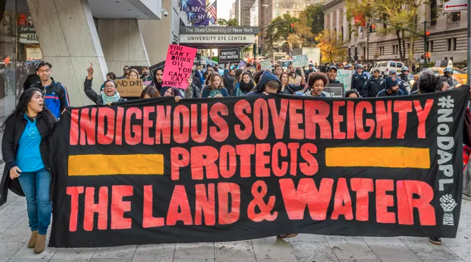

No DAPL Protests
2016

The Dakota Access Pipeline protests, also called by the hashtag #NoDAPL, were grassroots movements that began in early 2016 in reaction to the approved construction of Energy Transfer Partners' Dakota Access Pipeline in the northern United States. The pipeline was projected to run from the Bakken oil fields in western North Dakota to southern Illinois, crossing beneath the Missouri and Mississippi Rivers, as well as under part of Lake Oahe near the Standing Rock Indian Reservation. Many in the Standing Rock tribe and surrounding communities consider the pipeline to constitute a serious threat to the region's water. The construction is also seen as a direct threat to ancient burial grounds and cultural sites of historic importance.
In April 2016, youth from Standing Rock and surrounding Native American communities organized a campaign to stop the pipeline, calling themselves, "ReZpect Our Water".Inspired by the youth, several adults, including Joye Braun of the Indigenous Environmental Network and tribal historian LaDonna Brave Bull Allard established a water protectors' camp as a center for direct action, spiritual resistance to the pipeline, cultural preservation, and defense of Indigenous sovereignty. Over the summer, the youth undertook a cross-country run from Standing Rock to Washington D.C. to raise awareness of the struggle. The #NoDAPL hashtag began to trend on social media and, gradually, the camps at Standing Rock grew to thousands of people.
Attempts to remove the protesters gained a great deal of media attention. In September 2016, construction workers bulldozed a section of privately owned land the tribe had claimed as sacred ground, and when protesters trespassed into the area security workers used attack dogs which bit at least six of the protesters and one horse. In October 2016, police with riot gear and military equipment cleared an encampment that was directly in the proposed pipeline path.In November 2016, police use of water cannons on protesters in freezing weather drew significant media attention.
During the protest numerous high-profile activists and Congressional Democrats spoke out for the rights of the tribe. Bernie Sanders actively supported the movement and President Obama spoke with tribal leaders and offered his support. Standing Rock Chairman David Archambault II, who was himself arrested and strip searched while protesting, gave numerous interviews explaining the tribe's positions; he also addressed the tribe's positions at the UN Human Rights Council in Geneva, Switzerland. In December 2016, under President Barack Obama's administration the Corps of Engineers denied an easement for construction of the pipeline under the Missouri River. On January 24, 2017, President Donald Trump signed an executive order that reversed the Obama legislation and advanced the construction of the pipeline, expediting the environmental review, which Trump described as an "incredibly cumbersome, long, horrible permitting process." On February 7, 2017, President Trump authorized the Army Corps of Engineers to proceed, ending the environmental impact assessment and the associated public comment period The pipeline was completed by April and its first oil was delivered on May 14, 2017.
A United States District Judge ruled in March 2020 that the government had not studied the pipeline's "effects on the quality of the human environment" enough, ordering the United States Army Corps of Engineers to conduct a new environmental impact review. In July 2020, a District Court judge issued a ruling for the pipeline to be shut down and emptied of oil pending a new environmental review.The temporary shutdown order was overturned by a U.S. appeals court on August 5, though the environmental review was ordered to continue.